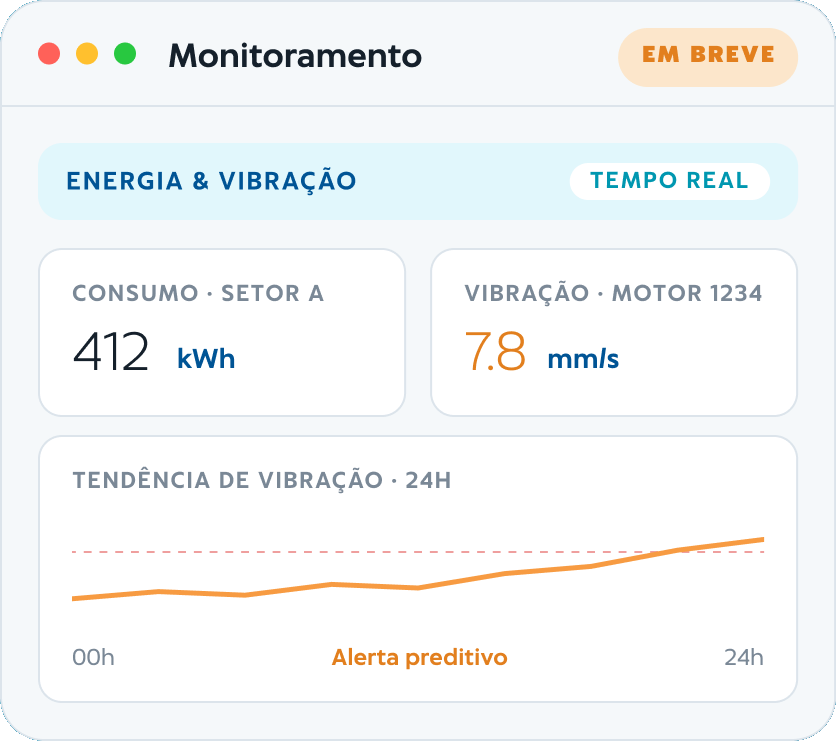

Sua manutenção de hoje, desenhada para os sensores de amanhã.
Guias práticos sobre execução da produção, indicadores do chão de fábrica e organização da manutenção.

Uma rotina clara para registrar, acompanhar e gerenciar.
Os sensores são o próximo passo natural de quem já controla produção com o Asterian e manutenção com o Aktian. Você investe no fluxo digital agora, com a garantia de uma plataforma já projetada para a conectividade física de amanhã.
Dois sinais que antecipam falhas.
SENSOR DE ENERGIA
Consumo elétrico
Acompanhe o consumo de energia por máquina, setor e fábrica. Identifique desperdícios, compare turnos e relacione gasto energético à produção real.
- Consumo por máquina, setor e planta
- Comparativo entre turnos e linhas
- Energia relacionada à produção (kWh por peça)
SENSOR DE VIBRAÇÃO
Saúde dos ativos
Meça a vibração de motores e equipamentos rotativos para detectar desgaste antes da quebra. Transforme a manutenção corretiva em preditiva com base em dados reais.
- Condição de motores e ativos rotativos
- Alerta preditivo quando o padrão muda
- Abertura automática de OS no Aktian
A plataforma já nasce pronta para os sensores.
O Asterian e o Aktian já estruturam os dados da sua operação. Quando você decidir instalar os sensores, eles se conectam ao ecossistema que você já usa, sem trocar de ferramenta, sem recomeçar.
- Software funciona hoje, de forma autônoma, via nuvem
- Hardware é opcional e entra quando fizer sentido para você
- Os dados de sensor conversam com produção e manutenção
Um passo de cada vez, sem recomeçar do zero.
Produção sob controle
O Asterian dá visibilidade em tempo real do chão de fábrica.
Manutenção digital
O Aktian organiza ordens de serviço, chamados e histórico por ativo.
Sensores conectados
Energia e vibração alimentam o ecossistema com dados de campo.
Preditiva de verdade
O sistema antecipa a falha e aciona a manutenção antes da parada.
Decisões guiadas por dados de campo.
Antecipe a parada
A mudança no padrão de vibração vira alerta antes da quebra, reduzindo paradas não planejadas.
Energia sob controle
Enxergue onde a energia é consumida e relacione gasto energético à produção para cortar desperdício.
Investimento que evolui
Comece pelo software e adicione hardware no ritmo da sua operação, sem trocar de plataforma.
Os sensores completam o ecossistema ÓKEA.
Produção, manutenção e monitoramento físico, três camadas conectadas em uma só visão da fábrica.
Asterian
Execução da produção em tempo real.
Aktian
Gestão da manutenção integrada.
Sensores EM BREVE
Energia e vibração para a preditiva.
O que você precisa saber sobre os sensores.
É obrigatório ter os sensores instalados para usar o software?
Não. O software funciona imediatamente via nuvem, de forma autônoma. Os sensores são opcionais e servem para expansões futuras, quando você quiser evoluir para a manutenção preditiva.
Quando os sensores estarão disponíveis?
Os sensores estão no roadmap do ecossistema ÓKEA. Fale com nossos especialistas para acompanhar a disponibilidade e participar das primeiras instalações.
O que será monitorado?
Inicialmente, consumo de energia (por máquina, setor e planta) e vibração de motores e ativos rotativos, para antecipar falhas.
Preciso trocar o Asterian ou o Aktian quando os sensores chegarem?
Não. Os sensores se conectam ao ecossistema que você já usa. Nada é substituído — os dados de campo apenas somam à produção e à manutenção.
Alcance suas metas com mais eficiência
Conheça o Asterian com uma demonstração guiada ou experimente o Aktian gratuitamente por 7 dias.